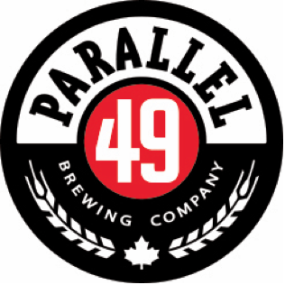

Street Kitchen

Food Menu
Snack & Share
-
Duck Fat Fries
6 - kennebec, ketchup, dijon mayo
-
Classic Poutine
12 - duck fat fries, curds, poultry gravy, black pepper
-
L.A. Ribs
22
- marinated beef short rib, ginger soy glaze, toasted sesame, green onion, kimchi
-
Chicken Fingers
9 - seasoned flour, honey dill
-
Waffle Fries
9 - cilantro mayo (sub chipotle cashew mayo for vegan option)
-
Butter Chicken Poutine
13 - duck fat fries, cheese curds, honey lemon yogurt, cilantro [contains nuts]
-
Prawn Lettuce Wraps
14 - kaffir lime dressing, red pepper, gochugaru panko crumb
-
Prawns in Garlic Butter
14
- kaffir lime dressing, red pepper, gochugaru panko crumb
Wings
-
Spicy Rub
14
- dried chilis, garlic, and sugar, served with buttermilk ranch
-
Herb Rub
14
- dried rosemary, thyme, and sage, served with buttermilk ranch
-
Barbecue Rub
14
- brown sugar, paprika, lapsang, served with buttermilk ranch
-
Lemon Pepper Honey
14
- lemon pepper rub with apple cider honey glaze
-
Yuzu Fish Sauce
14
- chopped garlic, thai chili, and green onion, with yuzu fish sauce glaze
-
Salt and Pepper
14
Burgers
Add a side of Mixed Greens, Buttermilk Slaw, Caesar Salad, Duck Fat, Fries, or Waffle Fries, $3
-
Spicy Chicken Sandwich
13 - brioche, slaw, valentina mayo, pickled jalapeno
-
Classic Chicken Sandwich
10 - brioche, mayo, iceberg
-
Korean Chicken Sandwich
13 - brioche, kimchi slaw, gochujang, sesame, green onion
-
Beef Burger
13 - brioche, sauce, onion, pickled cucumber, cheddar, iceberg
-
Veggie Burger
13 - brioche, sauce, onion, pickled cucumber, cheddar, iceberg
Wraps
Add a side of Mixed Greens, Buttermilk Slaw, Caesar Salad, Duck Fat Fries, or Waffle Fries, $3
-
Falafel Wrap
13 - flour tortilla, cilantro harissa tahini, cucumber, tomato, pickled banana pepper, iceberg
-
Chicken Ceasar Wrap
13 - flour tortilla, salt & pepper fried chicken, romaine, tomato, parmesan